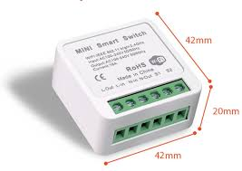
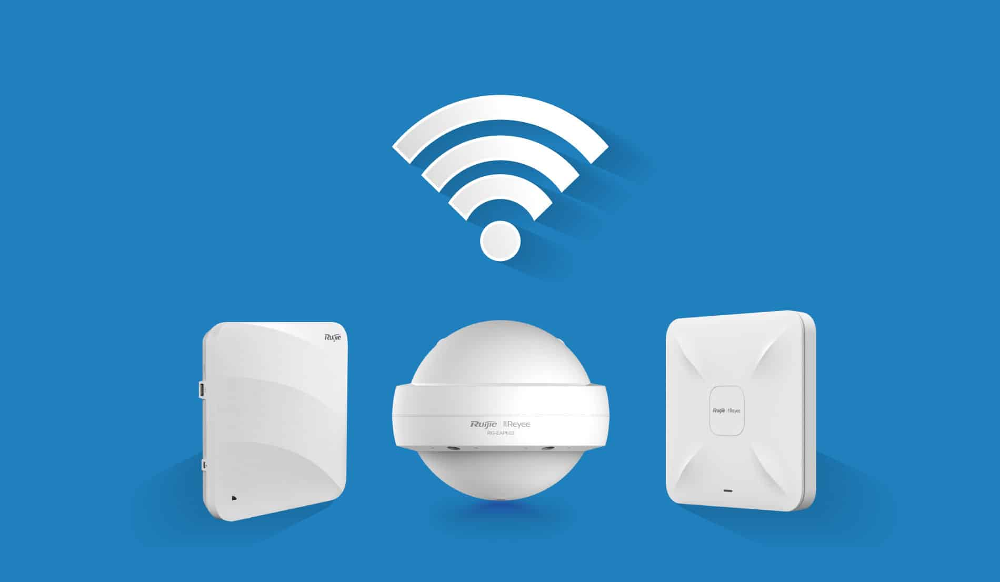

¿Que son los componentes activos en la red?
Los componentes activos en una red son dispositivos electrónicos que requieren alimentación eléctrica para funcionar y que realizan funciones clave en la transmisión, distribución, y control del tráfico de datos dentro de la red. Estos dispositivos no solo permiten la interconexión de los diferentes elementos de la red, sino que también gestionan, amplifican, y dirigen el tráfico de datos de manera eficiente.
Switch

Descripcion: Un switch es un dispositivo de red fundamental en la infraestructura de redes locales (LAN) que permite la interconexión de múltiples dispositivos, como computadoras, impresoras, y otros equipos de red, para permitir la transmisión eficiente de datos entre ellos.
Router

Descripcion: Un router es un dispositivo de red que dirige el tráfico de datos entre diferentes redes y gestiona el enrutamiento de paquetes de información. Es fundamental para conectar redes locales (LAN) con redes externas como Internet, así como para gestionar el tráfico dentro de una red.
Tarjeta de Red

Descripcion: Una tarjeta de red, también conocida como adaptador de red o interfaz de red, es un componente hardware que permite a una computadora o dispositivo conectarse a una red. Puede estar integrada en la placa base o instalada como una tarjeta de expansión en una ranura de expansión.
Interruptor inteligente WIFI
Descripcion: Un interruptor inteligente Wi-Fi es un dispositivo de control de iluminación y otros aparatos eléctricos que se conecta a una red Wi-Fi, permitiendo su operación y gestión remota a través de aplicaciones móviles o asistentes virtuales.
Access Point
Descripcion: n Access Point (AP), o punto de acceso, es un dispositivo de red que permite la conexión de dispositivos inalámbricos a una red cableada mediante tecnología Wi-Fi. Su función principal es proporcionar acceso a la red local (LAN) y, en algunos casos, gestionar la conexión a Internet para dispositivos sin cables.